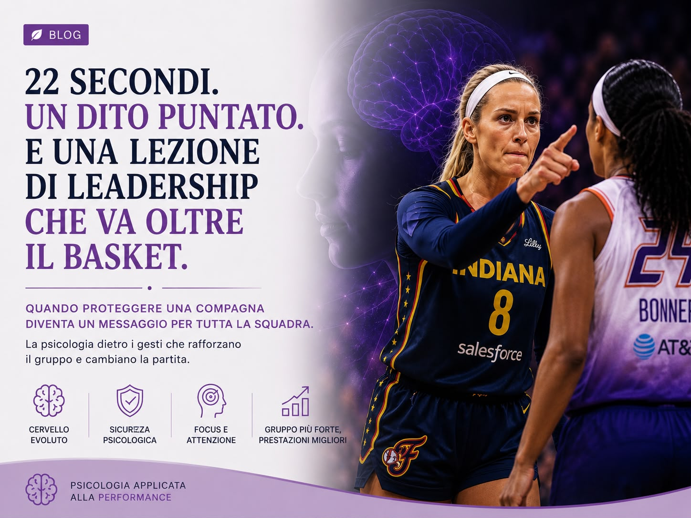

22 secondi. Un dito puntato. E una lezione di leadership che va oltre il basket.
Cosa ci insegna un gesto rimasto immobile per ventidue secondi su leadership, sicurezza psicologica e regolazione emotiva.
Ilaria Dammicco
Pubblicato il 4 Luglio 2026 · 6 min di lettura
Ci sono gesti che durano pochi secondi.
E poi ci sono gesti che raccontano molto più di quanto sembri.
Uno di questi è il famoso dito puntato di Sophie Cunningham durante una partita di WNBA.
La scena
Ventidue secondi.
Nessun urlo. Nessuna spinta. Nessuna scenata.
Solo uno sguardo fisso. Un dito puntato. E una calma quasi disarmante.
Sui social molti hanno parlato di provocazione. Altri di antisportività.
Ma se osserviamo quella scena con gli occhi della psicologia dello sport, emerge qualcosa di molto più interessante.
Quello non era soltanto un gesto rivolto all'avversaria. Era un messaggio rivolto alla propria squadra.
La leadership non si vede solo quando si parla. Si vede soprattutto quando si agisce.
Sophie Cunningham non stava difendendo sé stessa. Stava difendendo la sua compagna, Caitlin Clark, che durante quella partita aveva subito numerosi contatti fisici e che, secondo lei, non stava ricevendo un'adeguata tutela arbitrale.
Al di là del giudizio sul gesto, il messaggio era chiaro.
"Se tocchi una di noi, non sarà da sola."
Ed è proprio questo uno degli elementi più potenti della leadership.
La leadership non consiste soltanto nel motivare un gruppo. Consiste nel far percepire alle persone che, nei momenti difficili, qualcuno sarà al loro fianco.
La sicurezza psicologica cambia il modo di giocare
In psicologia esiste un concetto chiamato sicurezza psicologica (psychological safety), introdotto da Amy Edmondson.
Descrive la percezione di poter agire, esporsi e persino commettere errori senza sentirsi soli o costantemente minacciati.
Anche nello sport questo principio assume un ruolo fondamentale.
Quando un atleta percepisce che il gruppo lo sostiene e lo protegge:
- Diminuisce la paura di sbagliare
- Aumenta la fiducia nei compagni
- Diventa più facile prendere iniziative
- Migliora la prestazione
Perché il cervello smette di investire energie nel proteggersi e può dedicarle al gioco.

Ma il punto non è il dito. Il punto è ciò che quel gesto ha provocato nel cervello dell'avversaria.
Ed è qui che la scena diventa ancora più interessante.
Quando Sophie rimane immobile, mantiene il contatto visivo e continua semplicemente a puntare il dito, non sta aumentando il caos. Sta facendo l'opposto. Sta mantenendo il controllo.
E questo ha un effetto psicologico molto particolare.
Il cervello in conflitto
Quando una persona conserva la calma mentre l'altro è emotivamente coinvolto, il cervello di chi sta dall'altra parte inizia automaticamente a cercare una spiegazione.
"Perché non reagisce?"
"Perché continua a guardarmi?"
"Come faccio a interrompere questa situazione?"
L'attenzione si sposta. Non è più sul gioco. Non è più sulla tattica. È sul conflitto.
Dal punto di vista cognitivo questo fenomeno rappresenta una riallocazione delle risorse attentive. Le nostre capacità di attenzione sono limitate. Se una parte viene assorbita dalla gestione del conflitto, ne rimane meno disponibile per leggere il gioco, prendere decisioni rapide o anticipare le azioni dell'avversario.
Non è il dito a destabilizzare. È l'autocontrollo.
Chi controlla le proprie emozioni influenza anche quelle degli altri
La regolazione emotiva è una delle competenze più importanti nella psicologia della performance. Non significa reprimere ciò che proviamo. Significa scegliere come rispondere.
Le emozioni, infatti, sono contagiose. La letteratura parla di emotional contagion, il contagio emotivo.
In una squadra
Lo stato emotivo di un atleta tende a diffondersi rapidamente agli altri. Lo stesso vale per la calma, la sicurezza, il senso di protezione.
Il leader
I leader non influenzano il gruppo soltanto con ciò che dicono. Lo influenzano soprattutto con ciò che trasmettono attraverso il loro comportamento.
Una precisazione importante
Questo non significa che provocare sia una strategia da utilizzare. Lo sport dovrebbe sempre promuovere rispetto, autocontrollo e fair play.
Ma episodi come questo ci ricordano una cosa importante: ogni comportamento comunica qualcosa. Anche un gesto apparentemente semplice.
Quel dito puntato, per molti, rappresentava una provocazione. Per le compagne di squadra, probabilmente, rappresentava qualcos'altro. Rappresentava un messaggio molto semplice: "Qui nessuno resta da solo."
E quando un gruppo si sente davvero protetto… gioca in modo diverso.
Riferimenti bibliografici
Edmondson, A. C. (1999). Psychological Safety and Learning Behavior in Work Teams. Administrative Science Quarterly, 44(2), 350-383.
Bandura, A. (1997). Self-Efficacy: The Exercise of Control. Freeman.
Cotterill, S. T., & Fransen, K. (2016). Athlete Leadership in Sport Teams. Current Opinion in Psychology, 16, 115-119.
Barsade, S. G. (2002). The Ripple Effect: Emotional Contagion and Its Influence on Group Behavior. Administrative Science Quarterly, 47(4), 644-675.
Iscriviti alla newsletter
per non perdere i prossimi contenuti.
Ci vediamo sabato prossimo 🦋
Ogni grande risultato
inizia da un primo passo.
Se questo articolo ti ha toccato, significa che c'è già un'area su cui lavorare. Il prossimo passo è trasformare la consapevolezza in azione.